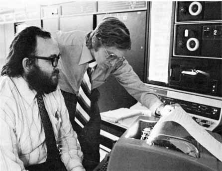
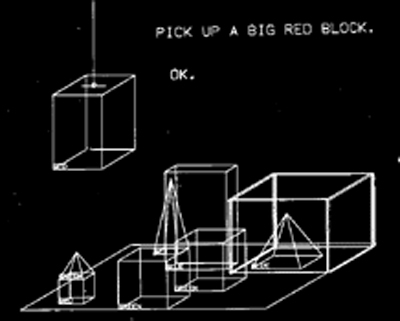

class: center, middle #### INCOMPATIBLE TIMESHARING SYSTEM History, Development, and Restoration Lars Brinkhoff --- ### WHO AM I? - Started with BASIC, then 68000 assembler - Read about hackers as a kid - Binutils PDP-11 support - GCC PDP-10 support <img src="pics/vic20.jpg" width="60%"></img> <img src="pics/dict.jpg" width="30%"></img> --- ### OVERVIEW - What is ITS? - History - Characteristics - Today --- ### WHAT IS ITS? - Operating system for PDP-10 computers - Used at MIT 1967 - 1990 - Known for its lack of security - Arpanet, Maclisp, Scheme, Zork, Emacs, Macsyma, SHRDLU, Logo, Lisp machines <img src="pics/MIT.jpg" width="52%"></img> </img> --- ### PDP-10 FAMILY - Made by Digital Equipment Corporation - Lifespan 1964-1988 - Generations: PDP-6, KA10, KI10, KL10, KS10 - 36-bit word length, 18-bit address space - Designed with Lisp in mind - Large orthogonal instruction set - Pleasant assembly language - Popular on the Arpanet <img src="pics/PDP-1040.jpg" width="100%"></img> --- ### BEFORE ITS - MIT AI group 1959 - CTSS 1961-1963 - Project MAC 1963 - Multics 1964-1967 <img src="pics/CTSS.jpeg" width="45%"></img> </img> --- ### BEGINNINGS - MIT AI lab at Project MAC - For their PDP-6 computer - Grew from single-user tools - First version 1967 - Alternative to CTSS and Multics <img src="pics/PDP-6.jpg" width="50%"></img> </img> --- ### HACKER ETHIC <div style="float: left; width: 70%;"> <ul> <li>ITS was written by "hackers"</li> <li>Designed to get work done, not an academic exercise</li> <li>Highly interactive</li> <li>No passwords (until later)</li> <li>No file permissions</li> <li>Source code for everything</li> <li>Do it yourself</li> <li>Guests allowed</li> </ul> </div> <div style="float: right; width: 30%; margin-top: 10%"> <img src="pics/RMS.jpg" width="100%"></img> </div> --- ### EARLY DEVELOPMENT - AI lab PDP-10 1968 - Virtual memory 1970 - Arpanet 1971 - Two more machines:<br> Dynamic Modeling and Mathlab </img> <img src="pics/MIT-DMS.jpg" width="35%"></img> </img> --- ### HEYDAYS - Network file system - Memory mapped raster displays - Fancy keyboards - Chaosnet - Macsyma KL10 1975 - Emacs 1976 - TCP/IP 1982 <img src="pics/knight-console.jpg" width="45%"></img> </img> --- ### RESEARCH <div style="float: left; width: 60%;"> <ul> <li>Artificial Intelligence</li> <li>Robotics</li> <li>Computer Vision</li> <li>Lisp, Scheme</li> <li>Lisp Machine</li> <li>Macsyma</li> <li>Logo</li> <li>Muddle</li> <li>CLU</li> </ul> </div> <div style="float: right; width: 40%; margin-top: 5%"> <img src="pics/robot.jpg" width="70%"></img> <img src="pics/Turtle.jpg" width="70%"></img> </div> --- ### SHRDLU - Robot simulation - Natural language understanding - Planning and solving problems  --- <h3>LISP</h3> <ul> <li>Invented 1958 by John McCarthy</li> <li>Initially for IBM 704 by Steve Russell</li> <li>Implemented for PDP-6</li> <li>Maclisp for ITS</li> <li>Compiler competitive with Fortran</li> <li>Lisp machine by Greenblatt, Knight</li> <li>Scheme by Steele, Sussman</li> </ul> <img src="pics/McCarthy.png" width="30%"></img> <img src="pics/CADR.jpg" width="22%"></img> </img> --- ### MACSYMA - Symbolic Manipulation - Joel Moses - Used by researchers over the Arpanet - Funded Maclisp development - Two ITS machines </img> --- <div style="float: left; width: 75%;"> <h3>LOGO</h3> <ul> <li>BBN 1967</li> <li>Moved to MIT 1970</li> <li>PDP-10 version ported to ITS</li> <li>New versions for PDP-11, Maclisp, Apple II<br></li> <li>Developed on ITS</li> <li>General Turtle, Logo machine</li> </ul> <h3>Small ITS</h3> </img> </div> <div style="float: right; width: 25%; margin-top: 10%;"> </img> </img> </div> --- ### MUDDLE - Intended as an successor to Lisp - Exclusive to the Dynamic Modeling group - Zork was written in Muddle - Infocom, text adventure boom - Bootstrap CLU --- ### CLU - Cluster - Data abstraction - Exceptions, Iterators, Parametric types - Influenced C++, Perl, Java, Ruby, ... - X Window System <img src="pics/Liskov.jpg" width="45%"></img> --- ### GAMES <div style="float: left; width: 50%;"> <ul> <li>Spacewar!</li> <li>MacHack VI</li> <li>Flight simulator</li> <li>Adventure</li> </ul> </div> <div style="float: right; width: 50%;"> <ul> <li>Maze</li> <li>Dazzle Dart</li> <li>Lunar Lander</li> <li>Zork</li> </ul> </div> <img src="pics/machack.jpeg" width="15%"></img> <img src="pics/flight.png" width="16%"></img> </img> </img> <img src="pics/Zork.jpg" width="29%"></img> <!-- ### IMPORTED SOFTWARE - Emulator for TOPS-10 and WAITS system calls - Collaboration between PDP-10 sites - DEC: MACRO, LINK, CROSS, Fortran - SAIL: FAIL, SPELL, SUDS, TeX, PUB, GEOMED - CMU: Scribe <img src="pics/geomed.png" width="27%"></img> </img> --> --- ### MULTIPROCESSING <div style="float: left; width: 60%;"> <ul> <li>PDP-10, timesharing</li> <li>PDP-6, stand alone</li> <li>PDP-11, perpiherals</li> <li>CONS, Lisp machine</li> <li>CHEOPS, chess machine</li> <li>GT40, vector display</li> <li>Imlac, vector display</li> <li>TT2500, Logo display</li> <li>Tools and software</li> </ul> </div> <div style="float: right; width: 40%;"> <img src="pics/PDP-11.jpg" width="45%"></img> <img src="pics/GT40.jpg" width="45%"></img> <img src="pics/Imlac.jpg" width="45%"></img> </img> </div> --- ### FEATURES - PCLSR, PC lusering - Processes & processors available as files - The debugger is the user interface - Application UX similar to Emacs - User-space device drivers - Real-time scheduling - Terminal-independent text output ### LIMITATIONS - Just one level of directories - File names 6+6 characters --- ### DECLINE - PDP-6s and KA10s scrapped - KS10 1985 - KL10 shipped to Sweden 1988 - Shut down 1990 --- ### TIMESTAMPS --- ### VERSIONS --- ### LEGACY <div style="float: left; width: 70%;"> <ul> <li>GNU project</li> <li>Emacs</li> <li>Info</li> <li>Emacs Lisp, Common Lisp</li> <li>Macsyma, Maxima</li> <li>Meta key</li> <li>Unix job control</li> <li>more, less</li> </ul> </div> <div style="float: right; width: 30%;"> <img src="pics/GNU.jpg" width="60%"><br> <img src="pics/Emacs.png" width="60%"><br> <br> </div> --- ### GNU PROJECT - Richard Stallman - Inspired by ITS values - Free software - Dover printer --- ### A NEW HOPE - ITS running on an emulator 1992 - Put on Internet 2001 - Public ITS distribution - Unix tools for ITS files and networking <img src="pics/pdp10x.jpg" width="60%"> --- ### RESTORATION - Emulate PDP-10 + strange hardware - MIT backups - Search through files on tapes - Find interesting programs - Build from source code - Debug - Emulated Chaosnet </img> --- ### REBUILD - Boot off magtape - Make file system on disk - Load ITS and a few binary programs - Reboot into ITS - Build system and >400 programs - Many bug fixes - Issue tracking - Continuous integration --- ### PiDP-10 </img> --- ### MORE INFORMATION - <a href="http://github.com/PDP-10/its">github.com/PDP-10/its</a> - <a href="https://github.com/larsbrinkhoff/its-manual/wiki">New manual</a> </img>